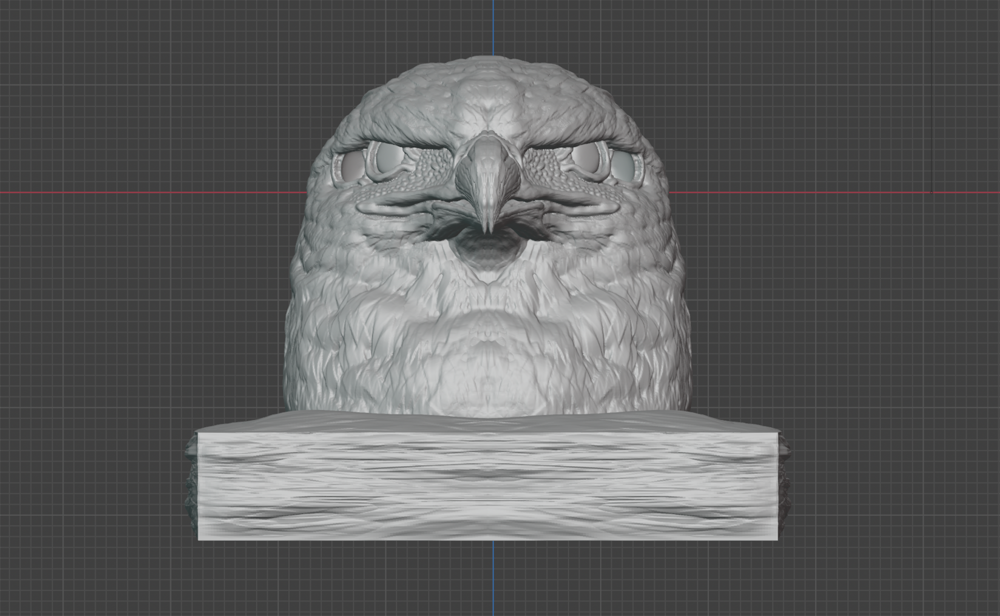
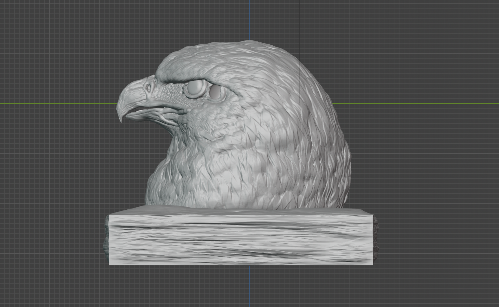
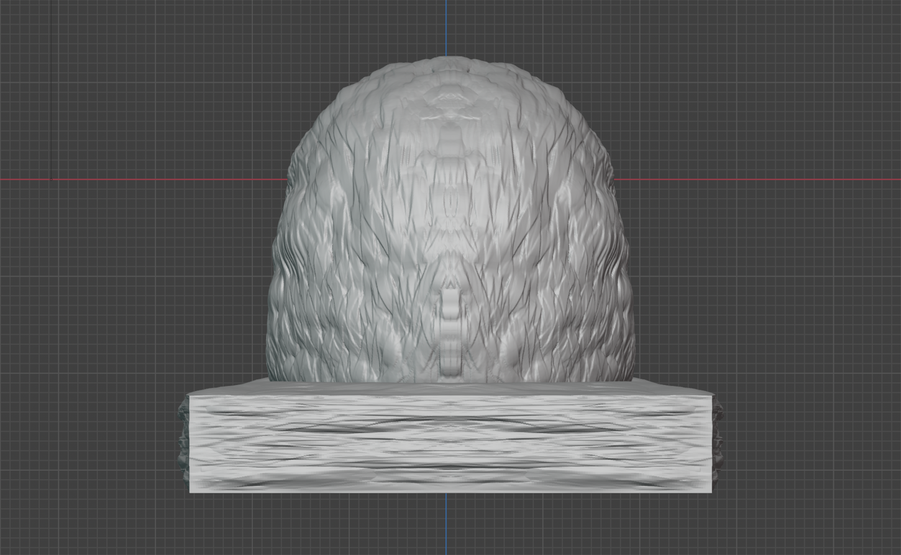
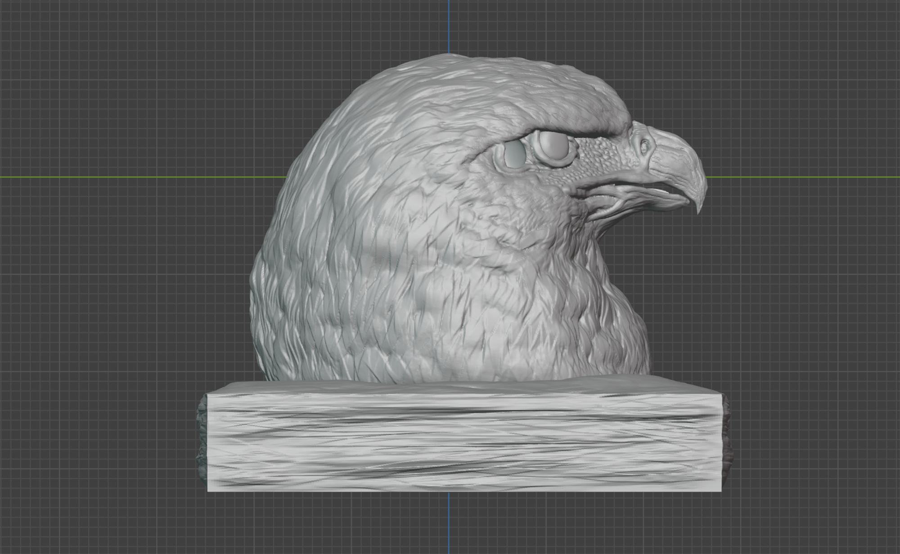
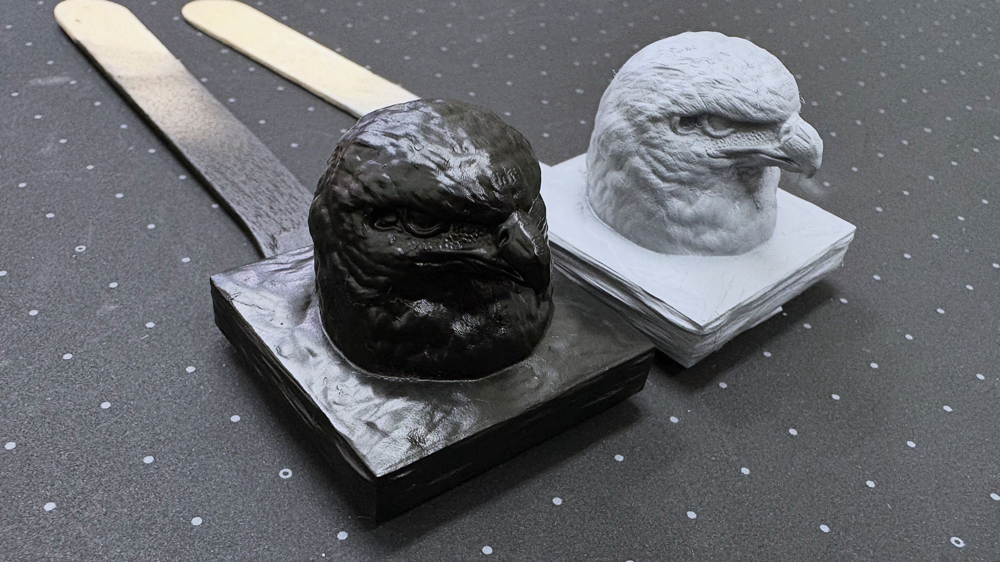

「 鷲 ヘッドモデル / Head Model of Eagle 」
造形：工夫
初めての造形作品として制作した本作品では、細部の質感表現に徹底してこだわりました。
特に試行錯誤を重ねたのは、鷲特有の頭部付近における毛並みの再現です。
立体物としていかに自然な流れを生み出すかを追求した結果、グレイストリップ（ブラシ）を用いることで、羽毛一本一本の繊細な重なりや筋を表現する手法へと至りました。
また、顔周りの皮膚と首元の羽毛では、生体としての質感が根本から異なるため、それぞれの差異を丁寧に描き分けることでリアリティを追求しています。
さらに嘴（くちばし）の造形においても、より硬質で鋭い質感が伝わるよう細部まで作り込みました。
初制作ながらも、生物としての説得力と細部への情熱を詰め込んだ造形を、ぜひご覧ください。




下地塗り：試作
実際に教授の指導のもと、光造形３Dプリンターを用いて立体物として出力しました。
その後、サーフェイサーを吹きかけ、下地塗りを行いました。
今回は、試作品ということでブラックとグレイの２色でそれぞれ塗装してみました。
（個人的にはグレイカラーの方が造形が際立って見やすいと思います。）

ホームへ戻る